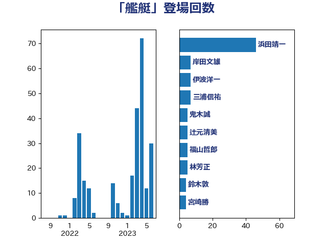

単語「艦艇」

| 浜田靖一 | 自由民主党 | 46 回 |
| 岸田文雄 | 自由民主党 | 7 回 |
| 伊波洋一 | 無所属 | 7 回 |
| 三浦信祐 | 公明党 | 7 回 |
| 鬼木誠 | 立憲民主党 | 5 回 |
| 辻元清美 | 立憲民主党 | 5 回 |
| 福山哲郎 | 立憲民主党 | 5 回 |
| 林芳正 | 自由民主党 | 5 回 |
| 鈴木敦 | 国民民主党 | 4 回 |
| 宮崎勝 | 公明党 | 4 回 |
| 前原誠司 | 国民民主党 | 4 回 |
| 篠原豪 | 立憲民主党 | 3 回 |
| 渡辺周 | 立憲民主党 | 3 回 |
| 木村次郎 | 自由民主党 | 3 回 |
| 井野俊郎 | 自由民主党 | 3 回 |
| 赤嶺政賢 | 日本共産党 | 2 回 |
| 谷公一 | 自由民主党 | 2 回 |
| 大西健介 | 立憲民主党 | 2 回 |
| 和田有一朗 | 日本維新の会 | 2 回 |
| 吉田宣弘 | 公明党 | 2 回 |
| 三木圭恵 | 日本維新の会 | 2 回 |
| 青柳仁士 | 日本維新の会 | 1 回 |
| 長島昭久 | 自由民主党 | 1 回 |
| 金子道仁 | 日本維新の会 | 1 回 |
| 田村貴昭 | 日本共産党 | 1 回 |
| 榛葉賀津也 | 国民民主党 | 1 回 |
| 松原仁 | 立憲民主党 | 1 回 |
| 新垣邦男 | 立憲民主党 | 1 回 |
| 斎藤アレックス | 国民民主党 | 1 回 |
| 徳永久志 | 無所属 | 1 回 |
| 山下芳生 | 日本共産党 | 1 回 |
| 小西洋之 | 立憲民主党 | 1 回 |
| 小池晃 | 日本共産党 | 1 回 |
| 城内実 | 自由民主党 | 1 回 |
| 古川元久 | 国民民主党 | 1 回 |
| 中川郁子 | 自由民主党 | 1 回 |